I am a Graduate Researcher at Purdue University, specializing in Vision for Robotics. I hold a Bachelor of Technology in Electronics and Communication Engineering from the Indian Institute of Technology, Roorkee (IIT Roorkee). My research focuses on neuromorphic perception, uncertainty-aware sensor fusion for autonomous robot navigation, and 3D scene-aware Vision-Language Model agents that bridge spatial reasoning and natural language understanding for real-world autonomous systems.
Previously, I was a Design Engineer at STMicroelectronics in the Advanced Systems Research (ASR) group, where I worked on R&D for Edge AI applications, focusing on robotics and vision.
Conference Publications
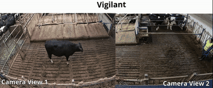
MooCap: A Multi-View Benchmark for Cow-Object-Human Interaction and Behaviour Dynamics
I. Noronha, H.W. Neave, U. Kaur
CVPR 2026
Uses pose estimation and temporal action segmentation to study how upbringing shapes cow behavior.
Feel the Ground: Radar-based Terrain Classification towards Gait Adaptation in Legged Robots
S. Bharti, I. Noronha, G. Torres, U. Kaur
IROS LBR 2026
Classifies terrain from mmWave radar point clouds for gait adaptation in legged robots.
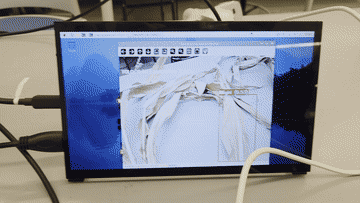
FieldSense: Real-Time Plant Disease Detection for Precision Agriculture
S. Bharti*, I. Noronha*, J.C. Soto*, A. Raturi, D.R. Buckmaster, U. Kaur
ASABE 2026 (Oral)
Two-stage leaf segmentation and disease classification running in real time on a Raspberry Pi.
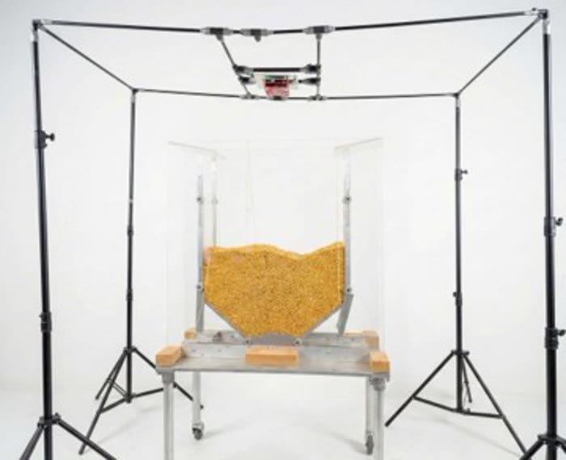
MM-Wave Radar Identification of Cavities in Grain Storage Systems to Prevent Entrapment
S. Bharti, I. Noronha, A. Agarwal, S.N. Doctor, R.P.K. Ambrose, U. Kaur
ASABE 2026 (Oral)
Fuses RGBD and mmWave radar to detect hidden cavities and deformities beneath surfaces.
Manuscripts in Preparation
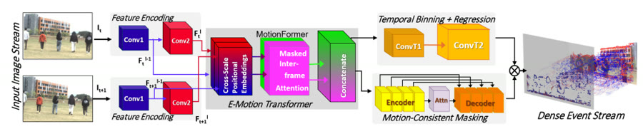
E-motion: High Fidelity Event Generation from Frame-Based Input for Neuromorphic Vision
I. Noronha, J.C. Soto, S. Bharti, S. Singh, P. Chitiveli, J. Wachs, U. Kaur
WACV 2026
Motion Former limits event interpolation to the change between two frames, using dual decoders for event occurrence and microsecond-precise timestamps.
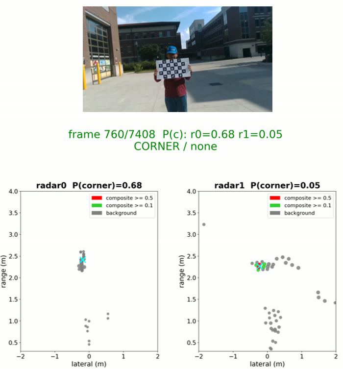
Elevation from Range: Cold-start mmWave Radar-Camera Calibration
I. Noronha*, S. Bharti*, G. Torres, U. Kaur
RA-L
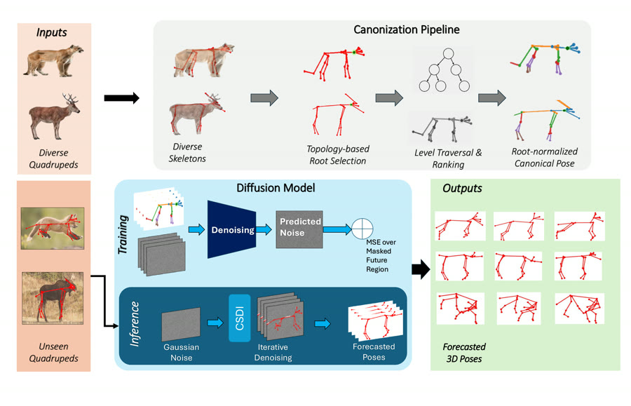
SemanticSkeleton: Canonizing Quadruped Skeletons for Cross-Skeletal Pose Forecasting
Non-contact Patient Registration and Monitoring System
Inventors: P.M. Pathak, I.W. Noronha
IN 479029. Granted Dec 2023
TARA: contactless patient registration with regional-language speech recognition, deployed in clinics. Led to the founding of Robolife Ltd., valued at $800K.
mmWave Radar system with AI for Sub-Wavelength Detection of Hidden Small Organisms (US Provisional) Inventors: U. Kaur, I. Noronha, S. Bharti, M. Murgia, C. Hill
Radar-based system and method for detecting structural anomalies in granular materials (US Provisional) Inventors: U. Kaur, I. Noronha, S. Bharti, R.P.K. Ambrose
Projects
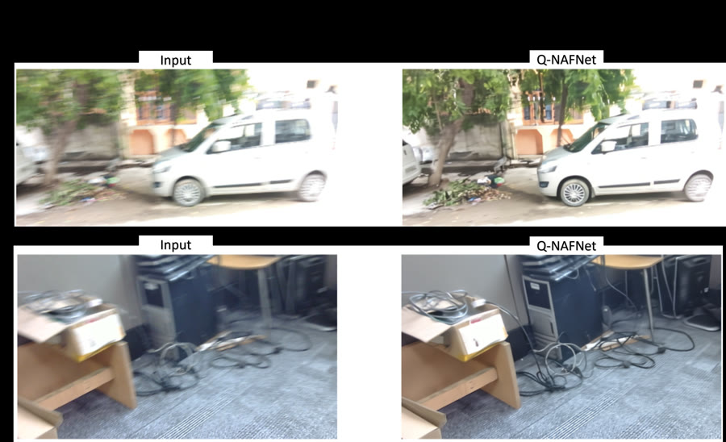
Quantized NAFNet: Image Deblurring on Constrained Hardware
8-bit Quantization-Aware Training & Structural Pruning
259MB to 14.5MB, 16× faster on software, 40× on hardware, 95% accuracy retained.
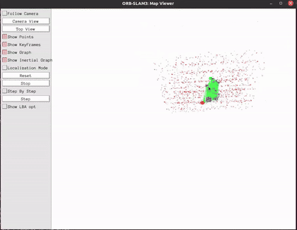
RGBD ORB-SLAM3 with Ultra-Low-Power Mono-Depth
2MB mono-depth model trained on KITTI, running at 22fps on STM32N6. ORB-SLAM3 and ROS1 deployed on STM32MP1 via Yocto.
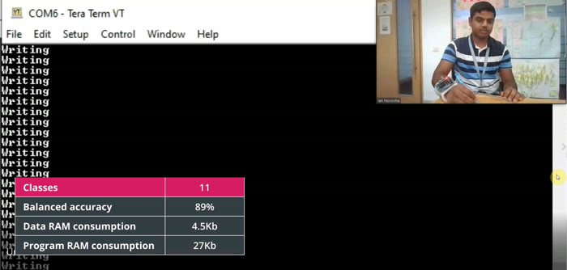
IMU-Based Gesture Recognition on ISPU
11-class gesture recognition running entirely on the ISPU, within 27KB RAM. 3rd Place, IEEE COINS TinyML Contest.
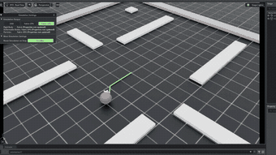
Hexapod RL & Path Planning
Course Project
Actor-critic reinforcement learning with PPO and RRT* planning for hexapod and tripod gaits on a custom 3D-printed platform.
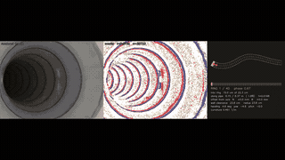
PipeBot: Autonomous Inspection and Surveying Robot for Agricultural Drain Tiles
ASABE 2026 (Lightning)
Autonomous robot for inspecting buried corrugated drainage pipes. A spiking neural network localizes from event-camera and IMU data alone, exploiting the corrugation pattern without GPS or excavation.
Awards
1st Place, SyDAG Hackathon (International) Oct 2025
Mentoring 12 undergraduate and graduate researchers at the ARIES Lab. Nominated by 10 for a mentorship award. Read their testimonials →
Hobbies
Outside the lab: cooking, anime, and gaming.
Welcome to
Culinary Club, IIT Roorkee
India's first student-run cafe
Co-founded the Culinary Club and introduced the first student-run cafeteria in IIT, with events drawing 100+ participants. Spearheaded national events at Inter-IIT Cultural meets, a model since followed by culinary clubs across the IITs. iitr.ac.in/culinaryclub →
Graduate Research Assistant, ARIES Lab, Purdue University
Aug 2024 - Present
Leading research on neuromorphic perception, sensor fusion, and 3D scene-aware VLM agents. Mentoring 12 researchers.
Design Engineer, Advanced Systems Research, STMicroelectronics
Apr 2021 - Jun 2024
Led Robotics and Vision research, CEO's commendation for embodied AI work. Mapped ViT layers onto in-memory-compute tiles for a 40% accuracy gain. Built SLAM and depth models for STM32 hardware.
Research Fellow, Robotics and Control Lab, IIT Roorkee
Mar 2020 - Apr 2021
Built a voice-controlled, non-contact patient registration system, deployed at a hospital. Contributed to founding Robolife Ltd., valued at $800K.
Business Technology Analyst, Deloitte USI
Jun 2019 - Mar 2020
Built data archival automation for JP Morgan Chase. Developed a drone-based mapping application.
Education
Purdue University
Aug 2024 - Ongoing
Graduate Researcher, Vision for Robotics. GPA: 3.89/4.0
Indian Institute of Technology, Roorkee (IIT Roorkee)
2019
Bachelor of Technology in Electronics and Communication Engineering